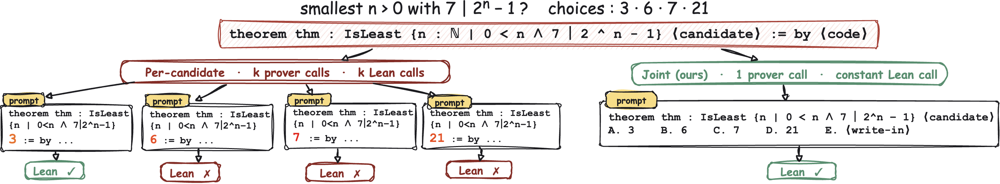
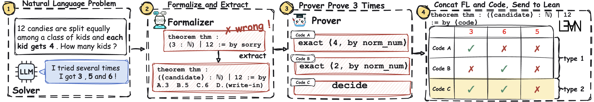
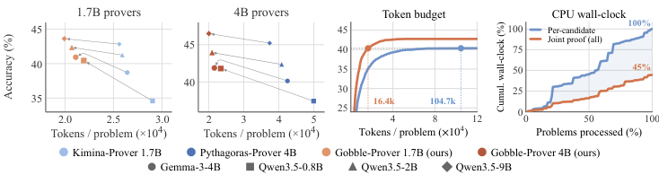

Trains Lean 4 provers that select or propose candidate answers and prove them jointly in one call, verified by Lean 4.26.
Abstract
In formal systems such as Lean 4, efficiently finding answers to mathematical problems and generating verifiable proofs is an important task in automated mathematical reasoning. In the traditional way where an upstream solver provides multiple candidate answers, the common workflow requires searching for proofs for each candidate separately, incurring redundant computational cost. To this end, we propose a joint proof framework that integrates candidate answer selection, answer supplementation, and formal proof generation into a unified reasoning process. At its core is a trained prover that selects given or proposes new answers and generates a proof for at least one answer in a single call. Joint proof can also reuse generated proofs to check for faithfulness errors. For problems with a unique answer, if two distinct answers both obtain verifiable proofs under the same formal statement, this confirms the statement does not faithfully preserve the original problem semantics. On MATH-500, AMC 2023, and AIME 2024/2025/2026, our framework achieves the same formal proof success rate as per-candidate proof generation with about one sixth of the token cost, and identifies at least 6.1% of the formalized statements as unfaithful without requiring additional judges. Our model and code are available at https://github.com/Linppz/Gobble-Prover.
Problem
For answer-construction problems with several candidate answers from an upstream solver, standard pipelines autoformalize and prove each candidate separately in Lean. This multiplies prover and verifier cost. Unfaithful formalizations also often go undetected.
Approach
A joint proof framework gives the prover a single formal statement with an empty answer slot plus all the candidates. The prover selects provable candidates or proposes new ones, declares them, and writes one proof that covers them; Lean checks only the declared values. Gobble-Prover-1.7B and Gobble-Prover-4B are trained from Kimina-Prover-Distill-1.7B and Pythagoras-Prover-4B using SFT on 5,000 NuminaMath-LEAN-derived examples followed by GRPO. If two distinct answers to a unique-answer problem both pass Lean, the formal statement is flagged as unfaithful.

Figure 1: Our joint proof framework versus the original per-candidate pipeline. For k candidates, the number of prover and Lean calls drops from O(k) to O(1) , and the prover can explore a larger space (answer E). Left: each formal statement is specific to a candidate answer for answer-construction problems. Right: candidates combined.

Figure 2: An unfaithful formal statement lets two values pass Lean. The problem asks how many kids share 12 candies when each gets 4, so the answer is 3, but the formalizer only asks which number divides 12 (dropping the condition that each kid gets 4), so every divisor of 12 becomes provable. Code A proves the statement with 3 (since 12=3\cdot 4 ) and Code B with 6 (since 12=6\cdot 2 ), two proof
Results
On MATH-500, AMC 2023, and AIME 2024-2026, the framework matches the formal proof success rate of per-candidate proving at about one sixth of the token cost. It flags at least 6.1% of formalized statements as unfaithful without extra judges.

Figure 3: Answer selection results ( Section 4.2 ). The first two panels plot accuracy (y-axis) against average prover output tokens per problem (x-axis). Accuracy is the fraction of problems whose correct answer Lean accepts within eight attempts. Markers indicate upstream solvers. Arrows go from each base prover (per-candidate) to our Gobble-Prover (joint proof). The third panel plots accuracy u
Solver
Kimina-1.7B
Gobble-1.7B
Pythagoras-4B
Gemma 4B
38.7
41.0
40.2
Qwen 0.8B
34.6
40.5
37.5
Qwen 2B
41.3
42.4
42.4
Qwen 9B
42.9
43.7
45.2
Accuracy (%) on all benchmarks combined, per-candidate base prover vs. joint-proof Gobble-Prover, by upstream solver